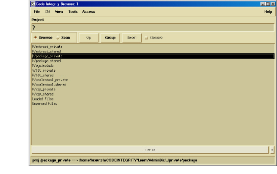

The Model Browser
As your main work environment, the Browser allows you to navigate projects and source files, query your information model, and access many DIScover features. The appearance of the Browser changes according to the menu options and features you select, but remains a familiar framework for your query and analysis operations. Occasionally, the Browser is replaced by windows that provide you with activity-specific information. One such window is the Viewer; this appears when you select an entity in the Browser and choose to display either its source code or a graphical view of its relationships to other entities. This book familiarizes you with Browser behavior and appearance.
The Browser has two modes: browse and scan. The appearance of the main browsing environment changes depending on the selected mode. You can change modes by selecting either the Browse or Scan button in the upper left of the Browser window.

Â